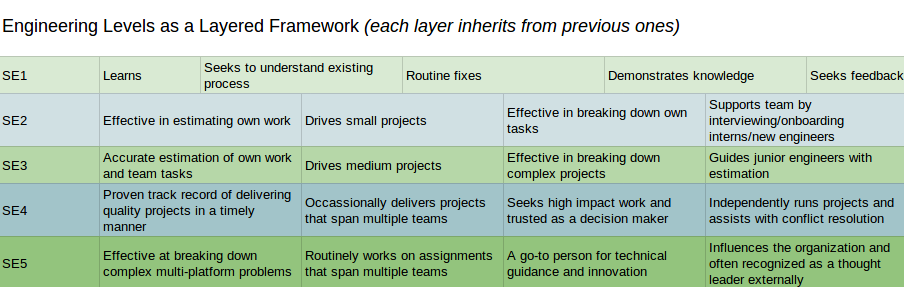

Career Development is Vague but Heavy
It can be vague where someone's career was before they met you and how they view their long term ambitions.
And when the work is getting done now it is easy to understand why future Career Development is one of the overlooked aspects of management.
Knowledge workers have a lot of job choices: if their current trajectory won't help them meet their life goals they will make changes that may come as an unwelcome surprise to their manager or organization.
Aligned interests, beyond salary-for-output (it would be even better if it was compensation-for-outcome), is one of the simpler ways to improve a product and reduce the costs of turnover. (i.e. https://en.wikipedia.org/wiki/Peopleware:_Productive_Projects_and_Teams)
When to discuss Career Development
One of the best tools for building relationships are 1:1's. ("Manager Tools" https://files.manager-tools.com/files/public/product-samples/One_on_One_Shownotes_0.pdf)
At least once a quarter (aka 3 months) a 1:1 session should cover Career Development. (i.e. a regular opportunity to align Company/Team Objectives or Goals with the individual's career)
One of the first questions I generally ask is "Where do you want to be in 2 years?"
2 years is just long enough to be aspirational but near enough we should be planning together how to get there
"Where" should not be reductively just about salary, instead it should encompass talent + experience + direction.
As a caveat, even the largest companies will not have every type of role possible. A good manager will provide guidance about what is immediately available (and research future possibilities).
Great managers grow careers even when it means the outcome will be an individual changing teams or organizations
An incomplete list of technology roles
There are too many roles related to technology to list them all but here are some important ones...
Software Engineer
- Front End Engineer: works mostly with implementing UserInterface features and bug fixes (frequently using Javascript and including HTML and CSS)
- Mobile Engineer: sort of a specialist "front end engineer" (assuming you agree that the focus is on Users), ideally experience with both iOS and Android but usually specializes in one
- Fullstack Engineer: someone who can write/fix "front end" and "back end" code, often a generalist given the necessity of context switching between so many frameworks
- Backend Engineer: specializing in APIs, Services, and often data storage (i.e. databases, files, etc.) - by contrast less focus directly on Users
Web Engineer is a less common title as there is less need to distinguish from a Desktop Engineer =p
Software Engineering gradations by years of experience
These levels/titles are really fuzzy because the years may more directly relate to time in an organization or specifically to a framework/techstack.
Also, with talent and extreme focus/specialization someone within 2 years can be producing at the level of a "principal engineer"
- Junior (<2 years): focused on implementation under supervision
- Senior (~between 2 and 5 years): able to independently gather requirements and run a project from start to finish
- Principal (>5 years): influence at the organizational level
Generally it gets exponentially harder to "level up" (it would be exceedingly rare to have an organization that is all principal engineers). Interestingly, given the investment in time, training, and supervision required for junior engineers, it is also rare to have a "pyramid" shaped engineering organization.
One caveat: a Software Engineer will apply best practices in creating solutions and systems (i.e. bigger picture complexity and scale), whereas a Programmer title hints at a more "limited to code" role.
Example Diagram of Engineering Levels

Operations
Technology roles supporting the actual running of software and services...
- SiteReliabilityEngineers (SRE): automating monitoring and stability as applied expertise via code (https://en.wikipedia.org/wiki/Site_Reliability_Engineering)
- DevOps: automating the operations of systems and services (including monitoring, scripts and code writing, etc.) - leverages Dev skills with Ops experience (https://en.wikipedia.org/wiki/DevOps)
- Operations: maintaining services/systems (hopefully still using automation and ideally transitioning to DevOps due to increased scale)
- System Administrator: manual job of maintaining a small number of (virtual or physical) machines/systems
Data
Information has to be stored somewhere, this specialization has become even more prevalent with the exponential growth of "big data"...
- Data Scientist: someone who uses mathematical tools like statistics, in conjunction with software and "big data", to answer questions (or discover insights)
- Data Engineer: someone who builds infrastructure and tools that enables "Data Science", i.e. pipelines, warehouses
- DBA (Database Administrator): someone who manages the data for an organization, often an expert in the tooling and optimization
Lateral Moves
Sometimes, besides all the levels and specializations, there are changes in career track (significantly different responsibilities and focus) that are big enough to be called a "lateral move".
-
Architect: larger systems are inherently complex and designing and communicating the interfaces, especially across multiple teams/services, is an essential "big picture" role
- Having eng experiences leads to designs with fast and effective implementations and prevents "ivory tower"
-
Engineering Manager: people are non-deterministic, they cannot be debugged, and yet they are a part of every successful organization. Someone who takes care of people, helps build and keep a team running smoothly, and achieves company outcomes. This is usually the role before Director and VP
- Having eng experience vastly increases credibility and the ability to estimate and deliver
-
Quality: someone who methodically thinks outside the box and regularly breaks boxes, ideally the most valuable boxes first
- Having eng experience means awareness of common shortcomings in frameworks/code and certain boundary conditions or real world scenarios (i.e. load)
-
Security: someone who thinks way outside of the box and finds ways to get inside of locked boxes
- Having eng experience allows for familiarity with architecture/framework/code flaws and automation of exploits
-
Product Manager: someone with passion and organizational skills who drives a product forward into the world
- Having eng experience allows for clearer and faster scope/timing discussions, and the ability to help the team with design or debugging
-
Designer: someone who loves the User and UI/UX and delivers highly desirable features and products
- Having eng experience allows for more effective collaboration and reduced time to market
Other Important Aspects
Career Development is not just getting the next position, it should also be about a lot of qualitative skills that lead to success:
- Listening: hearing Users, Stakeholders, Teammates, etc. is one of the most important parts of solving the right problems
- Communication: proposing good solutions, asking hard questions, raising concerns, writing skills
- Time Management: individual deadlines, team success
- Interviewing: being an interviewer is a completely different specialization - yet hiring cannot succeed without good technical interviewers
- Business: understanding impact and the consequences of outcomes
- Teamwork: multiplying the efforts of those around you
For each skill it is worth considering:
- What is the individual's current level?
- How important is it to them to improve?
- What resources can be provided?
- How will they be encouraged and held accountable for progress?
Did I miss something? Are there missing nuances or outright incorrect statements? Of course! =)
There is no one-size-fits-all definition to this NP-Hard problem of "people and organizations over time"
Iterative Improvement on this Article
My brash/blunt style is apparent in this article, but for a peek at how much better things get with collaboration and an editor check out the polished version:
https://web.archive.org/web/20200415071712/https://blog.helix.com/helping-your-engineers-grow/
Also, I have later stumbled across this similar idea of "the range of software careers" done as a podcast back in 2008: - https://www.se-radio.net/2008/09/episode-110-roles-in-software-engineering-i/ - https://www.se-radio.net/2008/09/episode-112-roles-in-software-engineering-ii/